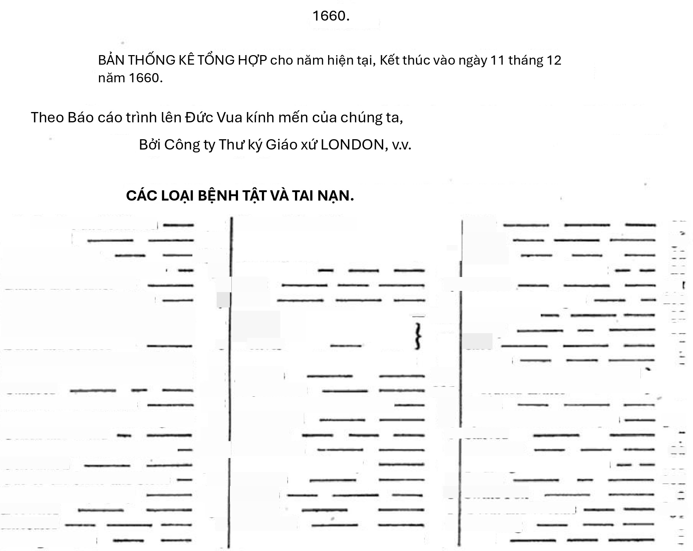
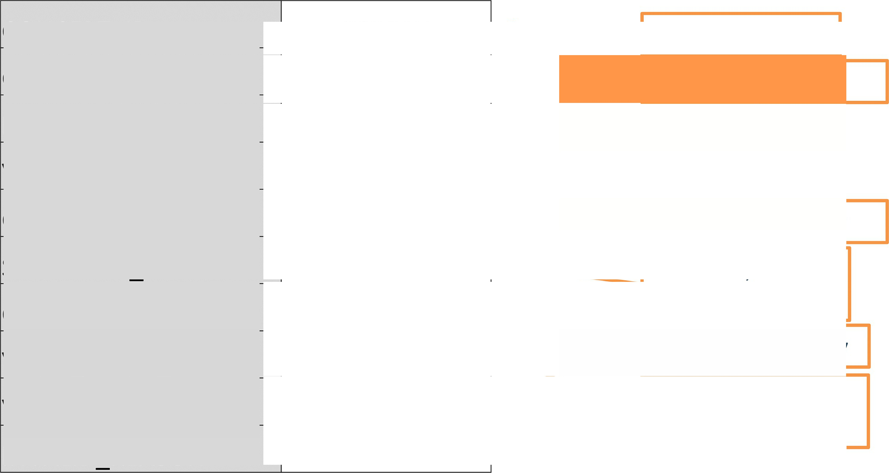
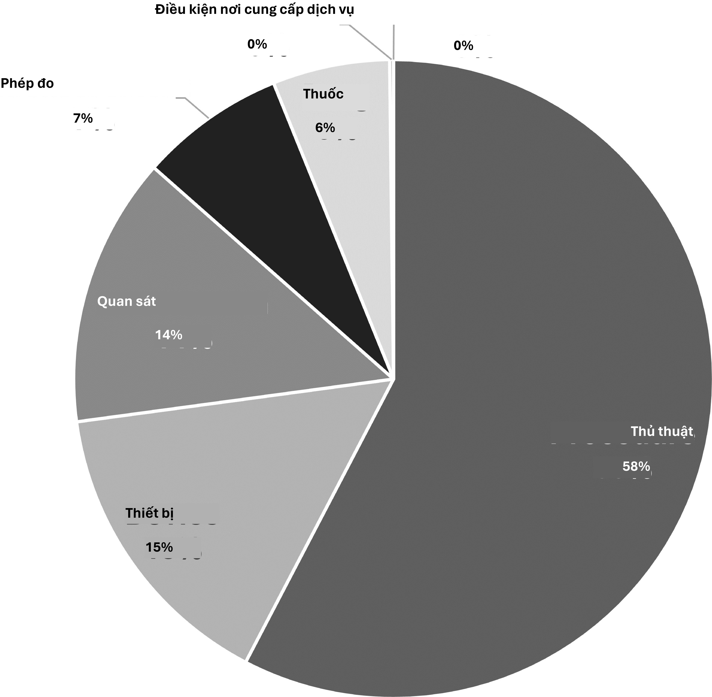
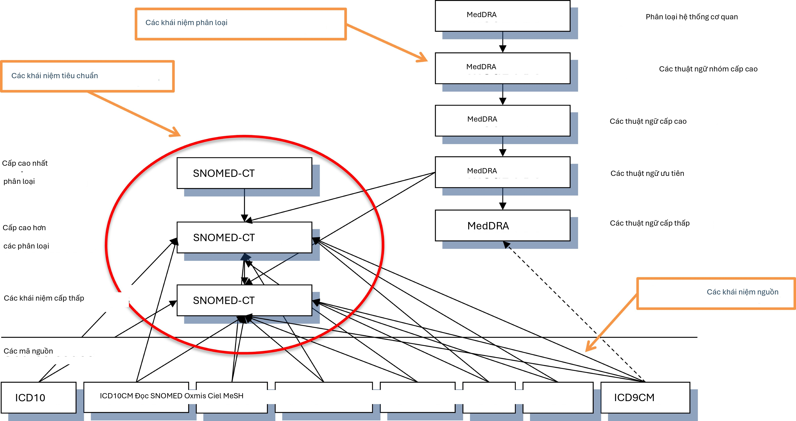
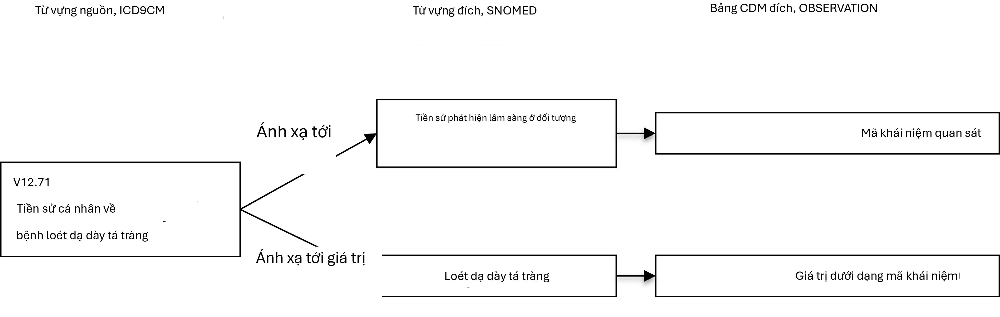
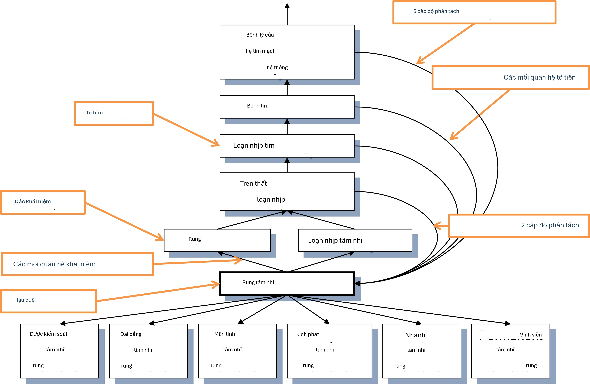

Chương 5: Từ vựng chuẩn hóa
Từ vựng chuẩn hóa
Chủ nhiệm chương: Christian Reich & Anna Ostropolets
Các Từ vựng chuẩn hóa OMOP, thường được gọi đơn giản là “Từ vựng”, là một phần nền tảng của mạng lưới nghiên cứu OHDSI và là một phần không thể thiếu của Mô hình dữ liệu chung (CDM). Chúng cho phép chuẩn hóa các phương pháp, định nghĩa và kết quả bằng cách xác định nội dung của dữ liệu, mở đường cho nghiên cứu và phân tích mạng lưới từ xa (phía sau tường lửa) thực sự. Thông thường, việc tìm kiếm và diễn giải nội dung của dữ liệu chăm sóc sức khỏe quan sát, cho dù đó là dữ liệu có cấu trúc sử dụng các lược đồ mã hóa hay dữ liệu văn bản tự do, đều được chuyển cho nhà nghiên cứu, người phải đối mặt với vô số cách khác nhau để mô tả các sự kiện lâm sàng. OHDSI yêu cầu hài hòa hóa không chỉ với một định dạng chuẩn hóa mà còn với nội dung tiêu chuẩn nghiêm ngặt.
Trong chương này, trước tiên chúng tôi mô tả các nguyên tắc chính của Từ vựng chuẩn hóa, các thành phần của chúng, các quy tắc, quy ước liên quan và một số tình huống điển hình, tất cả đều cần thiết để hiểu và sử dụng tài nguyên nền tảng này. Chúng tôi cũng chỉ ra nơi cần sự hỗ trợ của cộng đồng để liên tục cải thiện nó.
Tại sao cần Từ vựng, và tại sao cần Chuẩn hóa
Từ vựng y tế bắt nguồn từ các Bảng tử vong (Bills of Mortality) ở London thời trung cổ để quản lý các đợt bùng phát dịch hạch và các bệnh khác (xem Hình 5.1).
Kể từ đó, các phân loại đã mở rộng đáng kể về quy mô và độ phức tạp, lan rộng sang các khía cạnh khác của chăm sóc sức khỏe, chẳng hạn như thủ thuật và dịch vụ, thuốc, thiết bị y tế, v.v. Các nguyên tắc chính vẫn giữ nguyên: đó là các từ vựng, thuật ngữ, hệ thống phân cấp hoặc bản thể luận có kiểm soát mà một số cộng đồng chăm sóc sức khỏe đồng ý sử dụng nhằm mục đích thu thập, phân loại và phân tích dữ liệu bệnh nhân. Nhiều từ vựng trong số này được duy trì bởi các cơ quan công quyền và chính phủ với nhiệm vụ dài hạn. Ví dụ, Tổ chức Y tế Thế giới (WHO) sản xuất Phân loại quốc tế về bệnh tật (ICD) với phiên bản sửa đổi thứ 11 gần đây (ICD11). Các chính phủ địa phương tạo ra các phiên bản dành riêng cho quốc gia, chẳng hạn như ICD10CM (Hoa Kỳ), ICD10GM

Hình 5.1: Bảng tử vong London năm 1660, hiển thị nguyên nhân tử vong của cư dân đã khuất bằng cách sử dụng hệ thống phân loại gồm 62 bệnh được biết đến vào thời điểm đó.
- Tại sao cần Từ vựng, và tại sao cần Chuẩn hóa 57
(Đức), v.v. Chính phủ cũng kiểm soát việc tiếp thị và bán thuốc, đồng thời duy trì các kho lưu trữ quốc gia về các loại thuốc được chứng nhận đó. Từ vựng cũng được sử dụng trong khu vực tư nhân, dưới dạng sản phẩm thương mại hoặc cho mục đích sử dụng nội bộ, chẳng hạn như hệ thống hồ sơ sức khỏe điện tử (EHR) hoặc để báo cáo yêu cầu thanh toán bảo hiểm y tế.
Kết quả là, mỗi quốc gia, khu vực, hệ thống chăm sóc sức khỏe và tổ chức có xu hướng có các phân loại riêng mà rất có thể chỉ phù hợp nơi chúng được sử dụng. Vô số từ vựng này ngăn cản khả năng tương tác của các hệ thống mà chúng được sử dụng. Chuẩn hóa là chìa khóa cho phép trao đổi dữ liệu bệnh nhân, mở ra khả năng phân tích dữ liệu sức khỏe ở cấp độ toàn cầu và cho phép nghiên cứu có hệ thống và chuẩn hóa, bao gồm đặc điểm hiệu suất và đánh giá chất lượng. Để giải quyết vấn đề đó, các tổ chức đa quốc gia đã xuất hiện và bắt đầu tạo ra các tiêu chuẩn rộng rãi, chẳng hạn như WHO được đề cập ở trên và Danh mục thuật ngữ y tế hệ thống (SNOMED) hoặc Tên và mã nhận dạng quan sát logic (LOINC). Tại Hoa Kỳ, Ủy ban Tiêu chuẩn CNTT Y tế (HITAC) khuyến nghị sử dụng SNOMED, LOINC và từ vựng thuốc RxNorm làm tiêu chuẩn cho Điều phối viên quốc gia về CNTT Y tế (ONC) để sử dụng trong một nền tảng chung cho việc trao đổi thông tin sức khỏe trên toàn quốc giữa các thực thể đa dạng.
OHDSI đã phát triển OMOP CDM, một tiêu chuẩn toàn cầu cho nghiên cứu quan sát. Là một phần của CDM, Từ vựng chuẩn hóa OMOP có sẵn cho hai mục đích chính:
Kho lưu trữ chung của tất cả các từ vựng được sử dụng trong cộng đồng
Chuẩn hóa và ánh xạ để sử dụng trong nghiên cứu
Các Từ vựng chuẩn hóa được cung cấp cho cộng đồng miễn phí và phải được sử dụng cho thực thể OMOP CDM như bảng tham chiếu bắt buộc của nó.
Xây dựng các Từ vựng chuẩn hóa
Tất cả các từ vựng của Từ vựng chuẩn hóa được hợp nhất thành cùng một định dạng chung. Điều này giúp các nhà nghiên cứu không phải tìm hiểu và xử lý nhiều định dạng và quy ước vòng đời khác nhau của các từ vựng gốc. Tất cả các từ vựng được làm mới định kỳ và kết hợp bằng hệ thống Pallas.1 Nó được xây dựng và vận hành bởi Nhóm Từ vựng OHDSI, một phần của Nhóm công tác OMOP CDM tổng thể. Nếu bạn tìm thấy sai sót, vui lòng báo cáo và giúp cải thiện tài nguyên của chúng tôi bằng cách đăng bài trong Diễn đàn OHDSI2 hoặc trang Github CDM.3
Truy cập vào các Từ vựng chuẩn hóa
Để có được các Từ vựng chuẩn hóa, bạn không cần phải tự chạy Pallas. Thay vào đó, bạn có thể tải xuống phiên bản mới nhất từ ATHENA4 và tải nó vào cơ sở dữ liệu cục bộ của mình. ATHENA cũng cho phép tìm kiếm theo khía cạnh (faceted search) các Từ vựng.
1https://github.com/OHDSI/Vocabulary-v5.0 2https://forums.ohdsi.org 3https://github.com/OHDSI/CommonDataModel/issues 4http://athena.ohdsi.org
Để tải xuống tệp zip với tất cả các bảng Từ vựng chuẩn hóa, hãy chọn tất cả các từ vựng bạn cần cho OMOP CDM của mình. Các từ vựng có Khái niệm chuẩn (xem Mục 5.2.6) và cách sử dụng rất phổ biến đã được chọn trước. Thêm các từ vựng được sử dụng trong dữ liệu nguồn của bạn. Các từ vựng độc quyền không có nút chọn. Nhấp vào nút “Yêu cầu giấy phép” để kết hợp từ vựng đó vào danh sách của bạn. Nhóm Từ vựng sẽ liên hệ với bạn và yêu cầu bạn chứng minh giấy phép của mình hoặc giúp bạn kết nối với đúng người để có được giấy phép.
Nguồn của Từ vựng: Áp dụng thay vì Xây dựng
OHDSI thường ưu tiên áp dụng các từ vựng hiện có hơn là xây dựng mới, vì (i) nhiều từ vựng đã được sử dụng trong dữ liệu quan sát trong cộng đồng và (ii) việc xây dựng và duy trì từ vựng rất phức tạp và đòi hỏi sự đóng góp của nhiều bên liên quan trong thời gian dài để hoàn thiện. Vì lý do đó, các tổ chức chuyên biệt cung cấp từ vựng, vốn tuân theo vòng đời tạo mới, ngừng sử dụng, hợp nhất và chia tách (xem Mục 5.2.10). Hiện tại, OHDSI chỉ tạo ra các từ vựng quản trị nội bộ như Khái niệm loại (ví dụ: khái niệm loại tình trạng). Ngoại lệ duy nhất là RxNorm Extension, một từ vựng bao gồm các loại thuốc chỉ được sử dụng bên ngoài Hoa Kỳ (xem Mục 5.6.9).
Các khái niệm
Tất cả các sự kiện lâm sàng trong OMOP CDM được thể hiện dưới dạng các khái niệm, đại diện cho khái niệm ngữ nghĩa của mỗi sự kiện. Chúng là các khối xây dựng cơ bản của các bản ghi dữ liệu, làm cho hầu hết tất cả các bảng được chuẩn hóa hoàn toàn với một vài ngoại lệ. Các khái niệm được lưu trữ trong bảng CONCEPT (xem Hình 5.2).
Hệ thống này nhằm mục đích toàn diện, tức là có đủ các khái niệm để bao quát bất kỳ sự kiện nào liên quan đến trải nghiệm chăm sóc sức khỏe của bệnh nhân (ví dụ: tình trạng, thủ thuật, tiếp xúc với thuốc, v.v.) cũng như một số thông tin hành chính của hệ thống chăm sóc sức khỏe (ví dụ: lần khám, cơ sở chăm sóc, v.v.).
ID khái niệm
Mỗi khái niệm được gán một ID khái niệm để sử dụng làm khóa chính. ID số nguyên vô nghĩa này, thay vì mã gốc từ từ vựng, được sử dụng để ghi dữ liệu vào các bảng sự kiện CDM.
Tên khái niệm
Mỗi khái niệm có một tên. Tên luôn bằng tiếng Anh. Chúng được nhập từ nguồn của từ vựng. Nếu từ vựng nguồn có nhiều hơn một tên, tên biểu cảm nhất sẽ được chọn và các tên còn lại được lưu trữ trong bảng CONCEPT_SYNONYM dưới cùng khóa CONCEPT_ID. Các tên không phải tiếng Anh cũng được ghi lại trong CONCEPT_SYNONYM, với ID khái niệm ngôn ngữ thích hợp trong

Hình 5.2: Biểu diễn chuẩn các khái niệm từ vựng trong OMOP CDM. Ví dụ được cung cấp là bản ghi bảng CONCEPT cho mã SNOMED của Rung nhĩ.
trường LANGUAGE_CONCEPT_ID. Tên dài 255 ký tự, điều này có nghĩa là các tên rất dài sẽ bị cắt bớt và phiên bản đầy đủ được ghi lại dưới dạng một từ đồng nghĩa khác, có thể chứa tới 1000 ký tự.
Các miền
Mỗi khái niệm được gán một miền trong trường DOMAIN_ID, không giống như CONCEPT_ID dạng số, đây là một ID chữ và số duy nhất, phân biệt chữ hoa chữ thường, ngắn gọn cho miền. Ví dụ về các định danh miền như vậy là “Tình trạng”, “Thuốc”, “Thủ thuật”, “Lần khám”, “Thiết bị”, “Mẫu bệnh phẩm”, v.v. Các khái niệm mơ hồ hoặc được phối hợp trước (kết hợp) có thể thuộc về một miền kết hợp, nhưng các Khái niệm chuẩn (xem Mục 5.2.6) luôn được gán một miền duy nhất. Các miền cũng chỉ dẫn đến bảng và trường CDM nào mà một sự kiện lâm sàng hoặc thuộc tính sự kiện được ghi lại. Việc gán miền là một tính năng đặc thù của OMOP được thực hiện trong quá trình nhập từ vựng bằng cách sử dụng thuật toán heuristic được trình bày trong Pallas. Các từ vựng nguồn có xu hướng kết hợp các mã của các miền hỗn hợp, nhưng ở các mức độ khác nhau (xem Hình 5.3).
Thuật toán heuristic miền tuân theo các định nghĩa của các miền. Các định nghĩa này được bắt nguồn từ các định nghĩa bảng và trường trong CDM (xem Chương 4). Thuật toán heuristic không hoàn hảo; có những vùng xám (xem Mục 5.6 “Các tình huống đặc biệt”). Nếu bạn thấy các miền khái niệm được gán không chính xác, vui lòng báo cáo và giúp cải thiện quy trình thông qua Diễn đàn hoặc bài đăng vấn đề CDM.
Từ vựng
Mỗi từ vựng có một ID chữ và số duy nhất, phân biệt chữ hoa chữ thường, ngắn gọn, thường theo tên viết tắt của từ vựng, lược bỏ dấu gạch nối. Ví dụ, ICD-9-CM

Hình 5.3: Gán miền trong các từ vựng thủ thuật CPT4 và HCPCS. Theo trực giác, các từ vựng này nên chứa các mã và khái niệm của một miền duy nhất, nhưng thực tế chúng lại bị trộn lẫn.
có ID từ vựng là “ICD9CM”. Hiện có 111 từ vựng được OHDSI hỗ trợ, trong đó 78 từ vựng được áp dụng từ các nguồn bên ngoài, trong khi phần còn lại là các từ vựng nội bộ của OMOP. Các từ vựng này thường được làm mới theo lịch trình hàng quý. Nguồn và phiên bản của các từ vựng được xác định trong tệp tham chiếu VOCABULARY.
Các lớp khái niệm
Một số từ vựng phân loại các mã hoặc khái niệm của chúng, được biểu thị thông qua các ID chữ và số duy nhất, phân biệt chữ hoa chữ thường của chúng. Ví dụ, SNOMED có 33 lớp khái niệm như vậy, mà SNOMED gọi là “thẻ ngữ nghĩa”: phát hiện lâm sàng, bối cảnh xã hội, cấu trúc cơ thể, v.v. Đây là các phân chia theo chiều dọc của các khái niệm. Những loại khác, chẳng hạn như MedDRA hoặc RxNorm, có các lớp khái niệm phân loại các cấp độ theo chiều ngang trong các hệ thống phân cấp phân tầng của chúng. Các từ vựng không có bất kỳ lớp khái niệm nào, chẳng hạn như HCPCS, sử dụng ID từ vựng làm ID Lớp khái niệm.
Bảng 5.1: Các từ vựng có hoặc không có nguyên tắc phân loại phụ theo chiều ngang và chiều dọc trong lớp khái niệm.
Phân chia lớp khái niệm
nguyên tắc Từ vựng
Chiều ngang tất cả từ vựng thuốc, ATC, CDТ, Episode, HCPCS, HemOnc, ICDs, MedDRA, OSM, Census
Dọc CIEL, Chuyên khoa HES, ICDO3, MeSH, NAACCR, NDFRT, OPCS4, PCORNET, Kế hoạch, PPI, Nhà cung cấp, SNOMED, SPL, UCUM
Hỗn hợp CPT4, ISBT, LOINC
Không có APC, tất cả Khái niệm loại, Ethnicity, OXMIS, Race, Revenue Code, Sponsor, Supplier, UB04s, Visit
Các lớp khái niệm theo chiều ngang cho phép bạn xác định một cấp độ phân cấp cụ thể. Ví dụ, trong từ vựng thuốc RxNorm, lớp khái niệm “Thành phần” xác định cấp độ cao nhất của hệ thống phân cấp. Trong mô hình chiều dọc, các thành viên của một lớp khái niệm có thể ở bất kỳ cấp độ phân cấp nào từ cao nhất đến thấp nhất.
Các khái niệm chuẩn
Một khái niệm đại diện cho ý nghĩa của mỗi sự kiện lâm sàng được chỉ định là Chuẩn. Ví dụ, mã MESH D001281, mã CIEL 148203, mã SNOMED 49436004, mã ICD9CM 427.31 và mã Read G573000 đều xác định “Rung nhĩ” trong miền tình trạng, nhưng chỉ khái niệm SNOMED là Chuẩn và đại diện cho tình trạng trong dữ liệu. Các khái niệm khác được chỉ định là không chuẩn hoặc khái niệm nguồn và được ánh xạ tới các khái niệm Chuẩn. Các Khái niệm chuẩn được biểu thị bằng chữ “S” trong trường STANDARD_CONCEPT. Và chỉ những Khái niệm chuẩn này mới được sử dụng để ghi dữ liệu vào các trường CDM kết thúc bằng “_CONCEPT_ID”.
Các khái niệm không chuẩn
Các khái niệm không chuẩn không được sử dụng để đại diện cho các sự kiện lâm sàng, nhưng chúng vẫn là một phần của Từ vựng chuẩn hóa và thường được tìm thấy trong dữ liệu nguồn. Vì lý do đó, chúng còn được gọi là “khái niệm nguồn”. Việc chuyển đổi các khái niệm nguồn thành Khái niệm chuẩn là một quá trình được gọi là “ánh xạ” (xem Mục 5.3.1). Các khái niệm không chuẩn không có giá trị (NULL) trong trường STANDARD_CONCEPT.
Các khái niệm phân loại
Những khái niệm này không phải là Chuẩn, do đó không thể được sử dụng để đại diện cho dữ liệu. Nhưng chúng tham gia vào hệ thống phân cấp với các Khái niệm chuẩn và do đó có thể được sử dụng để thực hiện các truy vấn phân cấp. Ví dụ, truy vấn tất cả các hậu duệ của mã MedDRA 10037908 (không hiển thị cho người dùng chưa có giấy phép MedDRA, xem Mục 5.1.2 về các hạn chế truy cập) sẽ truy xuất khái niệm SNOMED chuẩn cho Rung nhĩ (xem Mục 5.4 về các truy vấn phân cấp sử dụng bảng CONCEPT_ANCESTOR) - xem Hình 5.4.

Hình 5.4: Các khái niệm chuẩn, nguồn không chuẩn và phân loại và các mối quan hệ phân cấp của chúng trong miền tình trạng. SNOMED được sử dụng cho hầu hết các khái niệm tình trạng chuẩn (với một số khái niệm liên quan đến ung thư học có nguồn gốc từ ICDO3), các khái niệm MedDRA được sử dụng cho các khái niệm phân loại phân cấp và tất cả các từ vựng khác chứa các khái niệm không chuẩn hoặc nguồn, không tham gia vào hệ thống phân cấp.
Việc lựa chọn chỉ định khái niệm là Chuẩn, không chuẩn và phân loại thường được thực hiện riêng cho từng miền ở cấp độ từ vựng. Điều này dựa trên chất lượng của các khái niệm, hệ thống phân cấp tích hợp và mục đích đã tuyên bố của từ vựng. Ngoài ra, không phải tất cả các khái niệm của một từ vựng đều được sử dụng làm Khái niệm chuẩn. Việc chỉ định là riêng biệt cho từng miền, mỗi khái niệm phải đang hoạt động (xem Mục 5.2.10) và có thể có thứ tự ưu tiên nếu nhiều hơn một khái niệm từ các từ vựng khác nhau cạnh tranh cho
cùng một ý nghĩa. Nói cách khác, không có thứ gọi là “từ vựng chuẩn”. Xem Bảng 5.2 để biết các ví dụ.
Bảng 5.2: Danh sách các từ vựng để sử dụng cho các chỉ định khái niệm Chuẩn/không chuẩn/phân loại.
Miền cho Khái niệm chuẩn cho khái niệm nguồn
cho các khái niệm phân loại
Tình trạng SNOMED, ICDO3 SNOMED Thú y MedDRA
Thủ thuật SNOMED, CPT4,
HCPCS, ICD10PCS, ICD9Proc, OPCS4
SNOMED Thú y, HemOnc, NAACCR
Chưa có tại thời điểm này
Đo lường SNOMED, LOINC SNOMED Thú y,
NAACCR, CPT4, HCPCS, OPCS4, PPI
Chưa có tại thời điểm này
Thuốc RxNorm, Phần mở rộng RxNorm, CVX
HCPCS, CPT4, HemOnc, NAAACCR
ATC
Thiết bị SNOMED Khác, hiện chưa được chuẩn hóa
Chưa có tại thời điểm này
Quan sát SNOMED Khác Chưa có tại thời điểm này
Lượt khám CMS Nơi cung cấp dịch vụ, ABMT, NUCC
SNOMED, HCPCS, CPT4, UB04
Chưa có tại thời điểm này
Mã khái niệm
Mã khái niệm là các định danh được sử dụng trong các từ vựng nguồn. Ví dụ, mã ICD9CM hoặc NDC được lưu trữ trong trường này, trong khi các bảng OMOP sử dụng ID khái niệm làm khóa ngoại vào bảng CONCEPT. Lý do là không gian tên trùng lặp giữa các từ vựng, tức là cùng một mã có thể tồn tại trong các từ vựng khác nhau với ý nghĩa hoàn toàn khác nhau (xem Bảng 5.3)
Bảng 5.3: Các khái niệm có mã khái niệm giống hệt nhau 1001, nhưng từ vựng, miền và lớp khái niệm khác nhau.
| ID khái niệm |
|
Tên khái niệm |
|
ID từ vựng |
|
|---|---|---|---|---|---|
| 35803438 |
|
Bạch cầu hạt |
|
Huyết học/Ung bướu |
|
| thuộc địa- |
|
||||
| kích thích | |||||
| yếu tố | |||||
| 35942070 |
|
AJCC TNM |
|
NAACCR |
|
| Clin T |
|
||||
| 1036059 |
|
Antipyrine |
|
RxNorm |
|
| ID khái niệm |
|
Tên khái niệm | ID miền |
|
|
|---|---|---|---|---|---|
| 38003544 |
|
Nội trú | Doanh thu |
|
|
| Điều trị - | Mã |
|
|
||
| Tâm thần | |||||
| 43228317 |
|
Aceprometazine | Thuốc |
|
|
| maleate | |||||
| 45417187 |
|
Brompheniramin | Thuốc |
|
|
| Maleate, 10 | |||||
| mg/mL | |||||
| tiêm | |||||
| dung dịch | |||||
| 45912144 |
|
Huyết thanh | Mẫu bệnh phẩm |
|
|
Vòng đời
Từ vựng hiếm khi là các tập hợp vĩnh viễn với một bộ mã cố định. Thay vào đó, các mã và khái niệm được thêm vào và bị ngừng sử dụng. OMOP CDM là một mô hình hỗ trợ dữ liệu bệnh nhân theo thời gian, nghĩa là nó cần hỗ trợ các khái niệm đã được sử dụng trong quá khứ và có thể không còn hoạt động, cũng như hỗ trợ các khái niệm mới và đặt chúng vào bối cảnh. Có ba trường trong bảng CONCEPT mô tả các trạng thái vòng đời có thể có: VALID_START_DATE, VALID_END_DATE và INVALID_REASON. Giá trị của chúng khác nhau tùy thuộc vào trạng thái vòng đời của khái niệm:
Khái niệm đang hoạt động hoặc mới
Mô tả: Khái niệm đang được sử dụng.
VALID_START_DATE: Ngày khởi tạo khái niệm, nếu không biết thì là ngày kết hợp khái niệm vào Từ vựng, nếu không biết thì là 01/01/1970.
VALID_END_DATE: Được đặt thành 31/12/2099 như một quy ước để chỉ “Có thể trở nên không hợp lệ trong một tương lai không xác định, nhưng hiện đang hoạt động”.
LÝ DO KHÔNG HỢP LỆ: NULL
Khái niệm bị ngừng sử dụng không có khái niệm kế thừa
Mô tả: Khái niệm không hoạt động và không thể được sử dụng làm Chuẩn (xem Mục 5.2.6).
VALID_START_DATE: Ngày khởi tạo khái niệm, nếu không biết thì là ngày kết hợp khái niệm vào Từ vựng, nếu không biết thì là 01/01/1970.
VALID_END_DATE: Ngày trong quá khứ chỉ ra việc ngừng sử dụng, hoặc nếu không biết thì là ngày làm mới từ vựng khi khái niệm trong từ vựng bị thiếu hoặc được đặt thành không hoạt động.
LÝ DO KHÔNG HỢP LỆ: “D”
Khái niệm đã nâng cấp có khái niệm kế thừa
Mô tả: Khái niệm không hoạt động, nhưng có khái niệm kế thừa được xác định. Đây thường là các khái niệm đã trải qua quá trình khử trùng lặp.
VALID_START_DATE: Ngày khởi tạo khái niệm, nếu không biết thì là
ngày kết hợp khái niệm vào Từ vựng, nếu không biết thì là 01/01/1970.
VALID_END_DATE: Ngày trong quá khứ chỉ ra một sự nâng cấp, hoặc nếu không biết thì là ngày làm mới từ vựng khi sự nâng cấp được bao gồm.
LÝ DO KHÔNG HỢP LỆ: “U”
Mã được sử dụng lại cho một khái niệm mới khác
Mô tả: Từ vựng đã sử dụng lại mã khái niệm của khái niệm bị ngừng sử dụng này cho một khái niệm mới.
VALID_START_DATE: Ngày khởi tạo khái niệm, nếu không biết thì là ngày kết hợp khái niệm vào Từ vựng, nếu không biết thì là 01/01/1970.
VALID_END_DATE: Ngày trong quá khứ chỉ ra việc ngừng sử dụng, hoặc nếu không biết thì là ngày làm mới từ vựng khi khái niệm trong từ vựng bị thiếu hoặc được đặt thành không hoạt động.
LÝ DO KHÔNG HỢP LỆ: “R”
Nói chung, mã khái niệm không được sử dụng lại. Nhưng có một vài từ vựng đi chệch khỏi quy tắc này, đặc biệt là HCPCS, NDC và DRG. Đối với những từ vựng đó, cùng một mã khái niệm xuất hiện trong nhiều hơn một khái niệm của cùng một từ vựng. Giá trị CONCEPT_ID của chúng vẫn là duy nhất. Các mã khái niệm được sử dụng lại này được đánh dấu bằng chữ “R” trong trường INVALID_REASON và khoảng thời gian từ VALID_START_DATE đến VALID_END_DATE nên được sử dụng để phân biệt các khái niệm có cùng mã khái niệm.
Các mối quan hệ
Bất kỳ hai khái niệm nào cũng có thể có một mối quan hệ được xác định, bất kể hai khái niệm đó có thuộc cùng một miền hoặc từ vựng hay không. Bản chất của các mối quan hệ được chỉ ra trong ID chữ và số duy nhất, phân biệt chữ hoa chữ thường, ngắn gọn của nó trong trường RELATIONSHIP_ID của bảng CONCEPT_RELATIONSHIP. Các mối quan hệ là đối xứng, tức là đối với mỗi mối quan hệ, một mối quan hệ tương đương tồn tại, trong đó nội dung của các trường CONCEPT_ID_1 và CONCEPT_ID_2 được hoán đổi và RELATIONSHIP_ID được thay đổi thành đối diện của nó. Ví dụ, mối quan hệ “Ánh xạ tới” (Maps to) có mối quan hệ ngược lại là “Được ánh xạ từ” (Mapped from).
Các bản ghi bảng CONCEPT_RELATIONSHIP cũng có các trường vòng đời RELATIONSHIP_START_DATE, RELATIONSHIP_END_DATE và INVALID_REASON.
Tuy nhiên, chỉ các bản ghi đang hoạt động với INVALID_REASON = NULL mới có sẵn thông qua ATHENA. Các mối quan hệ không hoạt động được giữ trong hệ thống Pallas chỉ để xử lý nội bộ. Bảng RELATIONSHIP đóng vai trò là tài liệu tham khảo với danh sách đầy đủ các ID mối quan hệ và các bản sao đảo ngược của chúng.
Các mối quan hệ ánh xạ
Các mối quan hệ này cung cấp các bản dịch từ các khái niệm không chuẩn sang khái niệm Chuẩn, được hỗ trợ bởi hai cặp ID mối quan hệ (xem Bảng 5.4).
Bảng 5.4: Loại mối quan hệ ánh xạ.
ID mối quan hệ
cặp Mục đích
“Ánh xạ tới” và “Được ánh xạ từ”
“Ánh xạ tới giá trị” và “Giá trị được ánh xạ từ”
Ánh xạ tới các Khái niệm chuẩn. Các Khái niệm chuẩn được ánh xạ tới chính chúng, các khái niệm không chuẩn được ánh xạ tới các Khái niệm chuẩn.
Hầu hết các khái niệm không chuẩn và tất cả các Khái niệm chuẩn đều có mối quan hệ này với một Khái niệm chuẩn. Các khái niệm trước được lưu trữ trong
*_SOURCE_CONCEPT_ID, và các khái niệm sau trong các trường
*_CONCEPT_ID. Các khái niệm phân loại không được ánh xạ. Ánh xạ tới một khái niệm đại diện cho một Giá trị sẽ được đặt vào các trường VALUE_AS_CONCEPT_ID của bảng MEASUREMENT và OBSERVATION.
Mục đích của các mối quan hệ ánh xạ này là cho phép đối chiếu giữa các khái niệm tương đương để hài hòa hóa cách các sự kiện lâm sàng được thể hiện trong OMOP CDM. Đây là một thành tựu chính của Từ vựng chuẩn hóa.
“Các khái niệm tương đương” có nghĩa là nó mang cùng một ý nghĩa và quan trọng là các hậu duệ phân cấp bao phủ cùng một không gian ngữ nghĩa. Nếu một khái niệm tương đương không có sẵn và khái niệm đó không phải là Chuẩn, nó vẫn được ánh xạ, nhưng tới một khái niệm rộng hơn một chút (được gọi là “ánh xạ lên trên” - up-hill mappings). Ví dụ, ICD10CM W61.51 “Bị ngỗng cắn” không có tương đương trong từ vựng SNOMED, vốn thường được sử dụng cho các khái niệm tình trạng chuẩn. Thay vào đó, nó được ánh xạ tới SNOMED 217716004 “Bị chim mổ,” mất đi bối cảnh con chim là một con ngỗng. Các ánh xạ lên trên chỉ được sử dụng nếu việc mất thông tin được coi là không liên quan đến mục đích sử dụng nghiên cứu tiêu chuẩn.
Một số ánh xạ kết nối một khái niệm nguồn với nhiều hơn một Khái niệm chuẩn. Ví dụ, ICD9CM 070.43 “Viêm gan E kèm hôn mê gan” được ánh xạ tới cả SNOMED 235867002 “Viêm gan E cấp tính” cũng như SNOMED 72836002 “Hôn mê gan.” Lý do cho điều này là khái niệm nguồn gốc là một sự kết hợp được phối hợp trước của hai tình trạng, viêm gan và hôn mê. SNOMED không có sự kết hợp đó, dẫn đến việc hai bản ghi được viết cho bản ghi ICD9CM, mỗi bản ghi với một Khái niệm chuẩn được ánh xạ.
Các mối quan hệ “Ánh xạ tới giá trị” có mục đích tách một giá trị cho các bảng OMOP CDM theo mô hình thực thể-thuộc tính-giá trị (EAV). Điều này thường xảy ra trong các tình huống sau:
Các đo lường bao gồm một xét nghiệm và một giá trị kết quả
Tiền sử bệnh cá nhân hoặc gia đình
Dị ứng với chất
Cần tiêm chủng
Trong những tình huống này, khái niệm nguồn là sự kết hợp của thuộc tính (xét nghiệm hoặc tiền sử) và giá trị (kết quả xét nghiệm hoặc bệnh). Mối quan hệ “Ánh xạ tới” ánh xạ nguồn này tới
khái niệm thuộc tính và “Ánh xạ tới giá trị” tới khái niệm giá trị. Xem Hình 5.5 để biết ví dụ.

Hình 5.5: Ánh xạ một-nhiều giữa khái niệm nguồn và Khái niệm chuẩn. Một khái niệm được phối hợp trước được tách thành hai khái niệm, một trong số đó là thuộc tính (ở đây là tiền sử phát hiện lâm sàng) và khái niệm kia là giá trị (loét dạ dày). Trong khi mối quan hệ “Ánh xạ tới” sẽ ánh xạ tới các khái niệm của miền đo lường hoặc quan sát, các khái niệm “Ánh xạ tới giá trị” không có hạn chế về miền.
Việc ánh xạ các khái niệm là một tính năng trung tâm khác của Từ vựng chuẩn hóa OMOP, được cung cấp miễn phí nhằm hỗ trợ các nỗ lực của cộng đồng trong việc thực hiện các Nghiên cứu Mạng lưới. Các mối quan hệ ánh xạ được trích xuất từ các nguồn bên ngoài hoặc được duy trì thủ công bởi Nhóm Từ vựng. Điều này có nghĩa là chúng không hoàn hảo. Nếu bạn tìm thấy các mối quan hệ ánh xạ sai hoặc không hợp lý, việc báo cáo và giúp cải thiện quy trình thông qua diễn đàn hoặc bài đăng về vấn đề CDM là vô cùng quan trọng.
Mô tả chi tiết hơn về các quy ước ánh xạ có thể được tìm thấy trong OHDSI Wiki.5
Các mối quan hệ phân cấp
Các mối quan hệ chỉ ra hệ thống phân cấp được xác định thông qua cặp mối quan hệ “Is a” (Là một) - “Subsumes” (Bao hàm). Các mối quan hệ phân cấp được xác định sao cho khái niệm con có tất cả các thuộc tính của khái niệm cha, cộng với một hoặc nhiều thuộc tính bổ sung hoặc một thuộc tính được xác định chính xác hơn. Ví dụ: SNOMED 49436004 “Atrial fibrillation” (Rung nhĩ) có liên quan đến SNOMED 17366009 “Atrial arrhythmia” (Loạn nhịp nhĩ) thông qua mối quan hệ “Is a”. Cả hai khái niệm đều có tập hợp thuộc tính giống hệt nhau ngoại trừ loại loạn nhịp tim, được định nghĩa là rung trong một khái niệm nhưng không phải trong khái niệm còn lại. Các khái niệm có thể có nhiều hơn một khái niệm cha và nhiều hơn một khái niệm con. Trong ví dụ này, SNOMED 49436004 “Atrial fibrillation” cũng là một “Is a” đối với SNOMED 40593004 “Fibrillation” (Rung).
Các mối quan hệ giữa các khái niệm của các từ vựng khác nhau
Các mối quan hệ này thường thuộc loại “Vocabulary A - Vocabulary B equivalent” (Tương đương Từ vựng A - Từ vựng B), được cung cấp bởi nguồn gốc của từ vựng hoặc được xây dựng bởi OHDSI
5https://www.ohdsi.org/web/wiki/doku.php?id=documentation:vocabulary:mapping
Nhóm Từ vựng. Chúng có thể đóng vai trò là các ánh xạ gần đúng nhưng thường kém chính xác hơn so với các mối quan hệ ánh xạ được quản lý tốt hơn. Các mối quan hệ tương đương chất lượng cao (chẳng hạn như “Source - RxNorm equivalent”) luôn được nhân bản bởi mối quan hệ “Maps to”.
Các mối quan hệ giữa các khái niệm của cùng một từ vựng
Các mối quan hệ từ vựng nội bộ thường được cung cấp bởi nhà cung cấp từ vựng. Mô tả đầy đủ có thể được tìm thấy trong tài liệu từ vựng dưới từng từ vựng riêng lẻ trên OHDSI Wiki.6
Nhiều mối quan hệ trong số này xác định các liên kết giữa các sự kiện lâm sàng và có thể được sử dụng để truy xuất thông tin. Ví dụ, các rối loạn về niệu đạo có thể được tìm thấy bằng cách theo dõi mối quan hệ “Finding site of” (Vị trí tìm thấy của) (xem Bảng 5.5):
Bảng 5.5: Mối quan hệ “Finding site of” đối với “Urethra” (Niệu đạo), chỉ ra các tình trạng nằm trong cấu trúc giải phẫu này.
CONCEPT_ID_1 CONCEPT_ID_2
4000504 “Bộ phận niệu đạo” 36713433 “Niệu đạo phân đôi một phần” 4000504 “Bộ phận niệu đạo” 433583 “Lỗ tiểu lệch trên”
4000504 “Bộ phận niệu đạo” 443533 “Lỗ tiểu lệch trên, nam”
4000504 “Bộ phận niệu đạo” 4005956 “Lỗ tiểu lệch trên, nữ”
Chất lượng và tính toàn diện của các mối quan hệ này thay đổi tùy thuộc vào chất lượng của từ vựng gốc. Nhìn chung, các từ vựng được sử dụng để trích xuất Khái niệm chuẩn, chẳng hạn như SNOMED, được chọn vì lý do chúng được quản lý tốt hơn và do đó cũng có xu hướng có các mối quan hệ nội bộ chất lượng cao hơn.
Hệ thống phân cấp
Trong một miền, các khái niệm chuẩn và khái niệm phân loại được tổ chức theo cấu trúc phân cấp và lưu trữ trong bảng CONCEPT_ANCESTOR. Điều này cho phép truy vấn và truy xuất các khái niệm cùng tất cả các khái niệm con cháu theo phân cấp của chúng. Các khái niệm con cháu này có cùng thuộc tính với tổ tiên của chúng, nhưng cũng có thêm các thuộc tính bổ sung hoặc được xác định rõ ràng hơn.
Bảng CONCEPT_ANCESTOR được xây dựng tự động từ bảng CONCEPT_RELATIONSHIP bằng cách duyệt qua tất cả các khái niệm có thể kết nối thông qua các mối quan hệ phân cấp. Các
mối quan hệ này là các cặp “Is a” - “Subsumes” (xem Hình 5.6), và các mối quan hệ khác kết nối các hệ thống phân cấp giữa các từ vựng. Việc liệu một mối quan hệ có tham gia vào trình tạo hệ thống phân cấp hay không được xác định cho mỗi ID mối quan hệ bằng cờ DEFINES_ANCESTRY trong bảng tham chiếu RELATIONSHIP.
Độ tổ tiên, hay số bước giữa tổ tiên và hậu duệ, được ghi lại trong MIN_LEVELS_OF_SEPARATION và MAX_LEVELS_OF_SEPARATION
6https://www.ohdsi.org/web/wiki/doku.php?id=documentation:vocabulary

Hình 5.6: Hệ thống phân cấp của tình trạng “Atrial fibrillation” (Rung nhĩ). Tổ tiên bậc nhất được xác định thông qua các mối quan hệ “Is a” và “Subsumes”, trong khi tất cả các mối quan hệ bậc cao hơn được suy ra và lưu trữ trong bảng CONCEPT_ANCESTOR. Mỗi khái niệm cũng là con cháu của chính nó với cả hai cấp độ phân tách bằng 0.
các trường, xác định kết nối ngắn nhất hoặc dài nhất có thể. Không phải tất cả các mối quan hệ phân cấp đều đóng góp như nhau vào việc tính toán các cấp độ phân tách. Một bước được tính cho bậc được xác định bởi cờ IS_HIERARCHICAL trong bảng tham chiếu RELATIONSHIP cho mỗi ID mối quan hệ.
Hiện tại, hệ thống phân cấp toàn diện chất lượng cao chỉ tồn tại cho hai miền: thuốc và tình trạng. Các miền thủ tục, đo lường và quan sát chỉ được bao phủ một phần và đang trong quá trình xây dựng. Cấu trúc tổ tiên đặc biệt hữu ích cho miền thuốc vì nó cho phép duyệt qua tất cả các loại thuốc có một thành phần nhất định hoặc các thành viên của các nhóm thuốc bất kể quốc gia xuất xứ, tên thương hiệu hoặc các thuộc tính khác.
Các bảng tham chiếu nội bộ
DOMAIN_ID, VOCABULARY_ID, CONCEPT_CLASS_ID (tất cả đều nằm trong các bản ghi CONCEPT) và CONCEPT_RELATIONSHIP_ID (trong CONCEPT_RELATIONSHIP) là
tất cả đều được kiểm soát bởi các từ vựng riêng của chúng. Chúng được định nghĩa trong bốn bảng tham chiếu DOMAIN, VOCABULARY, CONCEPT_CLASS và RELATIONSHIP, chứa
các trường *_ID làm khóa chính, trường *_NAME chi tiết hơn và trường *_CONCEPT_ID với tham chiếu ngược lại bảng CONCEPT, bảng này chứa một khái niệm cho mỗi bản ghi bảng tham chiếu. Mục đích của các bản ghi trùng lặp này là hỗ trợ mô hình thông tin cho phép các công cụ điều hướng tự động.
Bảng VOCABULARY cũng chứa các trường VOCABULARY_REFERENCE và VOCABULARY_VERSION tham chiếu đến nguồn và phiên bản của từ vựng gốc. Bảng RELATIONSHIP có các trường bổ sung DEFINES_ANCESTRY, IS_HIERARCHICAL và REVERSE_RELATIONSHIP_ID. Trường sau xác định ID mối quan hệ đối ứng cho một cặp mối quan hệ.
Các tình huống đặc biệt
Giới tính
Giới tính trong OMOP CDM và Từ vựng chuẩn hóa biểu thị giới tính sinh học khi sinh. Các câu hỏi thường được đặt ra là làm thế nào để xác định các giới tính thay thế. Các trường hợp sử dụng này phải được bao phủ thông qua các bản ghi trong bảng OBSERVATION, nơi giới tính tự xác định của một người được lưu trữ (nếu tài sản dữ liệu chứa thông tin đó).
Chủng tộc và Dân tộc
Các yếu tố này tuân theo các định nghĩa về cách chính phủ Hoa Kỳ xác định điều này. Dân tộc là sự phân biệt giữa các quần thể gốc Tây Ban Nha hoặc không phải gốc Tây Ban Nha, có thể thuộc bất kỳ chủng tộc nào. Chủng tộc được chia thành 5 chủng tộc phổ biến nhất, có các dân tộc là con cháu phân cấp của chúng. Các chủng tộc hỗn hợp không được bao gồm.
5.6. Các tình huống đặc biệt 71
Các hệ thống mã hóa chẩn đoán và các tình trạng OMOP
Các hệ thống mã hóa thường được sử dụng như ICD-9 hoặc ICD-10 xác định các chẩn đoán được xác định rõ ràng hơn hoặc ít hơn dựa trên một quy trình chẩn đoán thích hợp. Miền tình trạng không đồng nhất với không gian ngữ nghĩa này mà chỉ chồng chéo một phần. Ví dụ, các tình trạng cũng chứa các dấu hiệu và triệu chứng được ghi lại trước khi chẩn đoán được đưa ra, và các mã ICD chứa các khái niệm thuộc về các miền khác (ví dụ: thủ tục).
Các hệ thống mã hóa thủ tục
Tương tự, các hệ thống mã hóa như HCPCS và CPT4 được coi là danh mục các thủ tục y tế. Trên thực tế, chúng giống như một thực đơn các lý do để thanh toán cho dịch vụ y tế hơn. Nhiều dịch vụ trong số này được bao hàm trong miền thủ tục, nhưng nhiều khái niệm nằm ngoài phạm vi này.
Thiết bị
Các khái niệm về thiết bị không có hệ thống mã hóa chuẩn hóa nào có thể được sử dụng để tìm nguồn Khái niệm chuẩn. Trong nhiều dữ liệu nguồn, các thiết bị thậm chí không được mã hóa hoặc không nằm trong một hệ thống mã hóa bên ngoài. Vì lý do tương tự này, hiện tại không có hệ thống phân cấp nào khả dụng.
Các lượt thăm khám và dịch vụ
Các khái niệm về lượt thăm khám xác định bản chất của các lần tiếp xúc chăm sóc sức khỏe. Trong nhiều hệ thống nguồn, chúng được gọi là Địa điểm dịch vụ (Place of Service), biểu thị một tổ chức hoặc cấu trúc vật lý, chẳng hạn như bệnh viện. Trong những hệ thống khác, chúng được gọi là dịch vụ. Các khái niệm này cũng khác nhau giữa các quốc gia và rất khó để có được định nghĩa của chúng. Các địa điểm chăm sóc thường chuyên về một trong số ít các lượt thăm khám (Bệnh viện XYZ), nhưng vẫn không nên bị định nghĩa bởi chúng (ngay cả trong bệnh viện XYZ, bệnh nhân có thể gặp phải các lượt thăm khám không phải bệnh viện).
Nhà cung cấp và chuyên khoa
Bất kỳ nhà cung cấp là con người nào cũng được xác định trong miền nhà cung cấp. Đây có thể là các chuyên gia y tế như bác sĩ và y tá, nhưng cũng có thể là các nhà cung cấp phi y tế như chuyên gia đo thị lực hoặc thợ đóng giày. Các chuyên khoa là con cháu của nhà cung cấp “Bác sĩ”. Các Địa điểm chăm sóc không thể mang một chuyên khoa, mặc dù chúng thường được xác định bởi chuyên khoa của đội ngũ nhân viên chính của chúng (“Khoa phẫu thuật”).
Các lĩnh vực điều trị với các yêu cầu đặc biệt
Các Từ vựng chuẩn hóa bao phủ tất cả các khía cạnh của chăm sóc sức khỏe một cách toàn diện. Tuy nhiên, một số lĩnh vực điều trị có những nhu cầu đặc biệt và đòi hỏi các từ vựng đặc biệt. Ví dụ như ung bướu, chẩn đoán hình ảnh và di truyền học. Các Nhóm công tác OHDSI đặc biệt phát triển các phần mở rộng này. Kết quả là, Từ vựng chuẩn hóa OMOP tạo thành một
hệ thống tích hợp, nơi các khái niệm từ các nguồn gốc và mục đích khác nhau đều nằm trong cùng một hệ thống phân cấp cụ thể theo miền.
Các Khái niệm chuẩn trong miền thuốc
Nhiều khái niệm của miền thuốc được lấy từ RxNorm, một từ vựng công khai do Thư viện Y khoa Quốc gia Hoa Kỳ sản xuất. Tuy nhiên, các loại thuốc bên ngoài Hoa Kỳ có thể được bao phủ hoặc không, tùy thuộc vào việc sự kết hợp của thành phần, dạng bào chế và hàm lượng có được bán trên thị trường Hoa Kỳ hay không. Các loại thuốc không có trên thị trường Hoa Kỳ được thêm vào bởi Nhóm Từ vựng OHDSI dưới một từ vựng có tên là RxNorm Extension, đây là từ vựng miền lớn duy nhất do OHDSI sản xuất.
Các dạng của NULL
Nhiều từ vựng chứa các mã về sự thiếu hụt thông tin. Ví dụ, trong năm khái niệm giới tính 8507 “Male” (Nam), 8532 “Female” (Nữ), 8570 “Ambiguous” (Không xác định), 8551 “Unknown” (Không biết), và 8521 “Other” (Khác), chỉ có hai khái niệm đầu tiên là Chuẩn, và ba khái niệm còn lại là các khái niệm nguồn không có ánh xạ. Trong Từ vựng chuẩn hóa, không có sự phân biệt nào được thực hiện về lý do tại sao một thông tin không khả dụng; đó có thể là do bệnh nhân chủ động rút thông tin, một giá trị bị thiếu, một giá trị không được định nghĩa hoặc chuẩn hóa theo cách nào đó, hoặc sự vắng mặt của một bản ghi ánh xạ trong CONCEPT_RELATIONSHIP. Bất kỳ khái niệm nào như vậy đều không được ánh xạ, tương ứng với ánh xạ mặc định sang Khái niệm chuẩn với ID khái niệm = 0.
Tóm tắt

All events and administrative facts are represented in the OMOP Standard-ized Vocabularies as concepts, concept relationships, and concept ancestor hierarchy.
Most of these are adopted from existing coding schemes or vocabularies, while some of them are curated de-novo by the OHDSI Vocabulary Team.
All concepts are assigned a domain, which controls where the fact represented by the concept is stored in the CDM.
Concepts of equivalent meaning in different vocabularies are mapped to one of them, which is designated the Standard Concept. The others are source concepts.
Mapping is done through the concept relationships “Maps to” and “Maps to value”.
There is an additional class of concepts called classification concepts, which are non-standard, but in contrast to source concepts they participate in the hierarchy.
Concepts have a life-cycle over time.
5.8. Bài tập 73
Concepts within a domain are organized into hierarchies. The quality of the hierarchy differs between domains, and the completion of the hierarchy sys-tem is an ongoing task.
You are strongly encouraged to engage with the community if you believe you found a mistake or inaccuracy.
Bài tập
Điều kiện tiên quyết
Đối với những bài tập đầu tiên này, bạn sẽ cần tra cứu các khái niệm trong Từ vựng chuẩn hóa, điều này có thể được thực hiện thông qua ATHENA7 hoặc ATLAS.8
Bài tập 5.1. ID Khái niệm chuẩn cho “Gastrointestinal hemorrhage” (Xuất huyết tiêu hóa) là gì?
Bài tập 5.2. Những mã ICD-10CM nào ánh xạ tới Khái niệm chuẩn cho “Gastrointestinal hemorrhage” (Xuất huyết tiêu hóa)? Những mã ICD-9CM nào ánh xạ tới Khái niệm chuẩn này?
Bài tập 5.3. Các thuật ngữ ưu tiên MedDRA tương đương với Khái niệm chuẩn cho “Gastrointestinal hemorrhage” (Xuất huyết tiêu hóa) là gì?
Các câu trả lời gợi ý có thể được tìm thấy trong Phụ lục E.2.